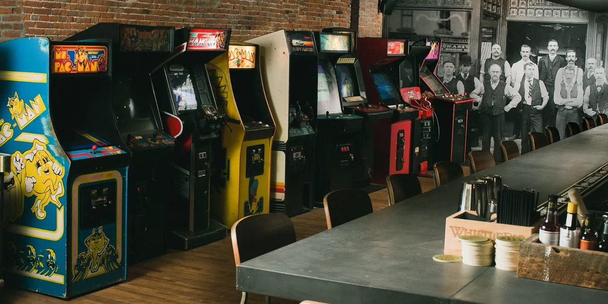
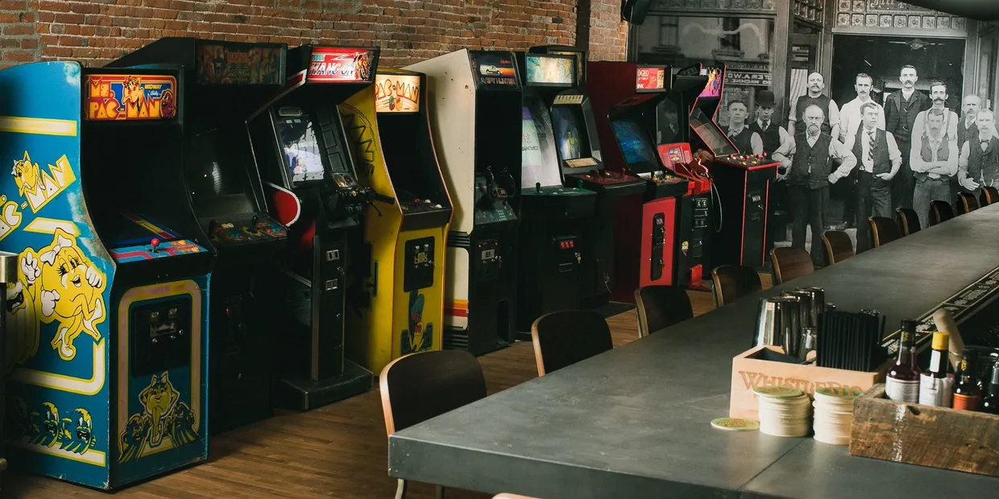
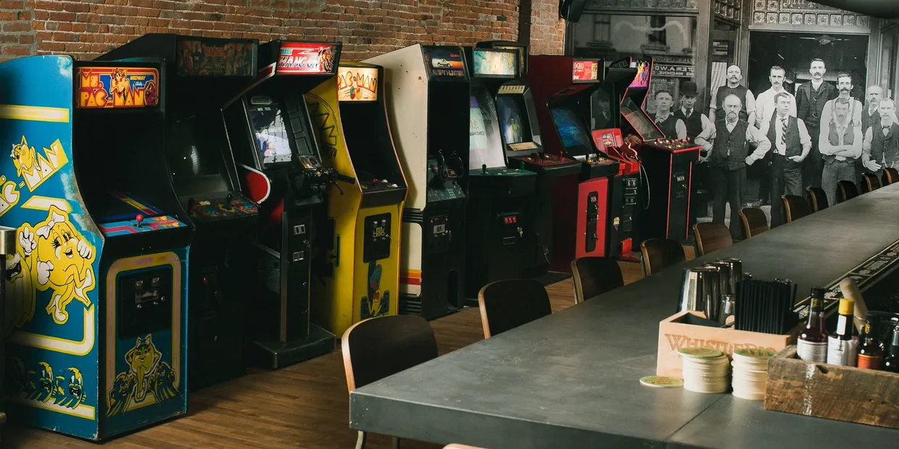

Nightlife: The Archives- This combination arcade and bar features vintage arcade games and an extensive cocktail list. Allie enjoys visiting the bar to play her favorite arcade game, Galaga!

Restaurants: Farmhouse Tap and Grill- Located in the heart of downtown Burlington, this spot specializes in serving locally sourced entrees and craft brews. Allie highly recommends their griddled cornbread and blue cheese garlic toast.

Study Spots: Queen City Cat Lounge- This new attraction is a must visit for cat lovers and students looking for a relaxing area to study. Allie loves to socialize with the adoptable cats and study in such a refreshing environment.

Scenic Views: Waterfront Park- This public space is the place to be for a sunset or casual stroll by the water. Allie loves coming down to the park for the Independence Day fireworks and seasonal concerts.


Outdoor Activities: Visiting the World’s Tallest Filing Cabinet- Built in 2002 by Bren Alvarez, this tourist attraction is 38 drawers tall and over 40 feet high! Allie enjoys bringing her friends and family to see this comical creation.
Shopping: Ten Thousand Villages- This small shop is located on Church Street and sells artisan-crafted home decor, jewelry and other personal accessories. Allie loves how the shop promotes their handcrafted items with food samples and mystery gift bags!